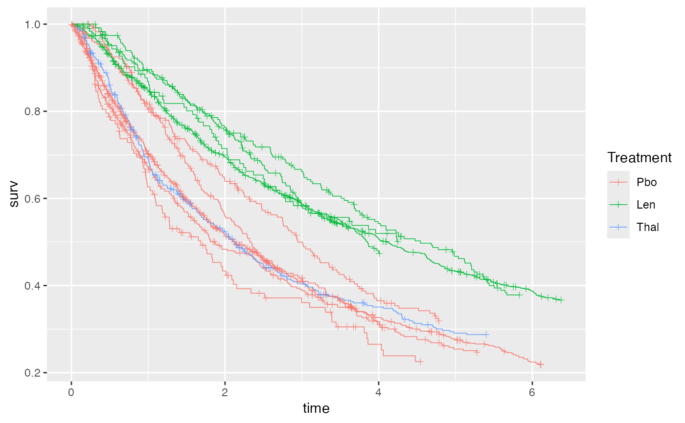

This helper function constructs a ggplot2 geom to plot Kaplan-Meier curves
from a network containing survival or time-to-event outcomes. This is useful
for overlaying the "raw" survival data on the estimated survival functions
created with plotted with plot.surv_nma_summary(), but can also be used
standalone to plot Kaplan-Meier curves before fitting a model.
Arguments
- network
A
nma_datanetwork object containing survival outcomes- ...
Additional arguments passed to
survival::survfit()- transform
Character string giving the transformation to apply to the KM curves before plotting. The default is
"identity"for no transformation; other options are"cloglog"for \(\log(-\log(S))\),"log"for \(\log(S)\), or"cumhaz"for the cumulative hazard \(-\log(S)\).- curve_args
Optional list of arguments to customise the curves plotted with
ggplot2::geom_step()- cens_args
Optional list of arguments to customise the censoring marks plotted with
ggplot2::geom_point()
Examples
# Set up newly-diagnosed multiple myeloma network
head(ndmm_ipd)
#> study trt studyf trtf age iss_stage3 response_cr_vgpr male
#> 1 McCarthy2012 Pbo McCarthy2012 Pbo 50.81625 0 1 0
#> 2 McCarthy2012 Pbo McCarthy2012 Pbo 62.18165 0 0 0
#> 3 McCarthy2012 Pbo McCarthy2012 Pbo 51.53762 1 1 1
#> 4 McCarthy2012 Pbo McCarthy2012 Pbo 46.74128 0 1 1
#> 5 McCarthy2012 Pbo McCarthy2012 Pbo 62.62561 0 1 1
#> 6 McCarthy2012 Pbo McCarthy2012 Pbo 49.24520 1 1 0
#> eventtime status
#> 1 31.106516 1
#> 2 3.299623 0
#> 3 57.400000 0
#> 4 57.400000 0
#> 5 57.400000 0
#> 6 30.714460 0
head(ndmm_agd)
#> study studyf trt trtf eventtime status
#> 1 Morgan2012 Morgan2012 Pbo Pbo 18.72575 1
#> 2 Morgan2012 Morgan2012 Pbo Pbo 63.36000 0
#> 3 Morgan2012 Morgan2012 Pbo Pbo 34.35726 1
#> 4 Morgan2012 Morgan2012 Pbo Pbo 10.77826 1
#> 5 Morgan2012 Morgan2012 Pbo Pbo 63.36000 0
#> 6 Morgan2012 Morgan2012 Pbo Pbo 14.52966 1
ndmm_net <- combine_network(
set_ipd(ndmm_ipd,
study, trt,
Surv = Surv(eventtime / 12, status)),
set_agd_surv(ndmm_agd,
study, trt,
Surv = Surv(eventtime / 12, status),
covariates = ndmm_agd_covs))
# Plot KM curves using ggplot2
library(ggplot2)
# We need to create an empty ggplot object to add the curves to
ggplot() + geom_km(ndmm_net)

# Adding plotting options, facets, axis labels, and a plot theme
ggplot() +
geom_km(ndmm_net,
curve_args = list(linewidth = 0.5),
cens_args = list(size = 3, shape = 124)) +
facet_wrap(vars(Study)) +
labs(xlab = "Time", ylab = "Survival Probability") +
theme_multinma()
# Using the transform argument to produce log-log plots (e.g. to assess the
# proportional hazards assumption)
ggplot() +
geom_km(ndmm_net, transform = "cloglog") +
facet_wrap(vars(Study)) +
theme_multinma()
# Using the transform argument to produce cumulative hazard plots
ggplot() +
geom_km(ndmm_net, transform = "cumhaz") +
facet_wrap(vars(Study)) +
theme_multinma()
# This function can also be used to add KM data to plots of estimated survival
# curves from a fitted model, in a similar manner
# \donttest{
# Run newly-diagnosed multiple myeloma example if not already available
if (!exists("ndmm_fit")) example("example_ndmm", run.donttest = TRUE)
# }
# Plot estimated survival curves, and overlay the KM data
# \donttest{
plot(predict(ndmm_fit, type = "survival")) + geom_km(ndmm_net)
# }